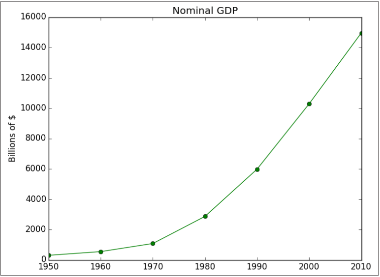

We live in a world that’s drowning in data. Websites track every user’s every click. Your smartphone is building up a record of your location and speed every second of every day. “Quantified selfers” wear pedometers-on-steroids that are ever recording their heart rates, movement habits, diet, and sleep patterns. Smart cars collect driving habits, smart homes collect living habits, and smart marketers collect purchasing habits. The Internet itself represents a huge graph of knowledge that contains (among other things) an enormous cross-referenced encyclopedia; domain-specific databases about movies, music, sports results, pinball machines, memes, and cocktails; and too many government statistics (some of them nearly true!) from too many governments to wrap your head around
There’s a joke that says a data scientist is someone who knows more statistics than a computer scientist and more computer science than a statistician. (I didn’t say it was a good joke.) In fact, some data scientists are—for all practical purposes—statisticians, while others are pretty much indistinguishable from software engineers. Some are machine-learning experts, while others couldn’t machine-learn their way out of kin‐ dergarten. Some are PhDs with impressive publication records, while others have never read an academic paper (shame on them, though). In short, pretty much no matter how you define data science, you’ll find practitioners for whom the definition is totally, absolutely wrong. Nonetheless, we won’t let that stop us from trying. We’ll say that a data scientist is someone who extracts insights from messy data. Today’s world is full of people trying to turn data into insight. For instance, the dating site OkCupid asks its members to answer thousands of ques‐ tions in order to find the most appropriate matches for them. But it also analyzes these results to figure out innocuous-sounding questions you can ask someone to find out how likely someone is to sleep with you on the first date. Facebook asks you to list your hometown and your current location, ostensibly to make it easier for your friends to find and connect with you. But it also analyzes these locations to identify global migration patterns and where the fanbases of different football teams live. As a large retailer, Target tracks your purchases and interactions, both online and instore. And it uses the data to predictively model which of its customers are pregnant, to better market baby-related purchases to them. In 2012, the Obama campaign employed dozens of data scientists who data-mined and experimented their way to identifying voters who needed extra attention, choos‐ ing optimal donor-specific fundraising appeals and programs, and focusing get-outthe-vote efforts where they were most likely to be useful. It is generally agreed that these efforts played an important role in the president’s re-election, which means it is a safe bet that political campaigns of the future will become more and more datadriven, resulting in a never-ending arms race of data science and data collection. Now, before you start feeling too jaded: some data scientists also occasionally use their skills for good—using data to make government more effective, to help the homeless, and to improve public health. But it certainly won’t hurt your career if you like figuring out the best way to get people to click on advertisements.
All new employees at DataSciencester are required to go through new employee ori‐ entation, the most interesting part of which is a crash course in Python. This is not a comprehensive Python tutorial but instead is intended to highlight the parts of the language that will be most important to us (some of which are often not the focus of Python tutorials).
You can download Python from python.org. But if you don’t already have Python, I
recommend instead installing the Anaconda distribution, which already includes
most of the libraries that you need to do data science.
As I write this, the latest version of Python is 3.4. At DataSciencester, however, we use
old, reliable Python 2.7. Python 3 is not backward-compatible with Python 2, and
many important libraries only work well with 2.7. The data science community is still
firmly stuck on 2.7, which means we will be, too. Make sure to get that version.
If you don’t get Anaconda, make sure to install pip, which is a Python package man‐
ager that allows you to easily install third-party packages (some of which we’ll need).
It’s also worth getting IPython, which is a much nicer Python shell to work with.
(If you installed Anaconda then it should have come with pip and IPython.)
Just run: pip install ipython
and then search the Internet for solutions to whatever cryptic error messages that
causes.
Python has a somewhat Zen description of its design principles, which you can also
find inside the Python interpreter itself by typing import this.
One of the most discussed of these is:
There should be one—and preferably only one—obvious way to do it.
Code written in accordance with this “obvious” way (which may not be obvious at all
to a newcomer) is often described as “Pythonic.” Although this is not a book about
Python, we will occasionally contrast Pythonic and non-Pythonic ways of accom‐
plishing the same things, and we will generally favor Pythonic solutions to our prob‐
lems.
A fundamental part of the data scientist’s toolkit is data visualization. Although it is very easy to create visualizations, it’s much harder to produce good ones. There are two primary uses for data visualization:
A wide variety of tools exists for visualizing data. We will be using the matplotlib library, which is widely used (although sort of showing its age). If you are interested in producing elaborate interactive visualizations for the Web, it is likely not the right choice, but for simple bar charts, line charts, and scatterplots, it works pretty well. In particular, we will be using the matplotlib.pyplot module. In its simplest use, pyplot maintains an internal state in which you build up a visualization step by step. Once you’re done, you can save it (with savefig()) or display it (with show()). For example, making simple plots (like Figure 3-1) is pretty simple:
Linear algebra is the branch of mathematics that deals with vector spaces. Although I can’t hope to teach you linear algebra in a brief chapter, it underpins a large number of data science concepts and techniques, which means I owe it to you to at least try. What we learn in this chapter we’ll use heavily throughout the rest of the book.
Abstractly, vectors are objects that can be added together (to form new vectors) and
that can be multiplied by scalars (i.e., numbers), also to form new vectors.
Concretely (for us), vectors are points in some finite-dimensional space. Although
you might not think of your data as vectors, they are a good way to represent numeric
data.
For example, if you have the heights, weights, and ages of a large number of people,
you can treat your data as three-dimensional vectors (height, weight, age). If
you’re teaching a class with four exams, you can treat student grades as fourdimensional vectors (exam1, exam2, exam3, exam4).
The simplest from-scratch approach is to represent vectors as lists of numbers. A list
of three numbers corresponds to a vector in three-dimensional space, and vice versa.
For example, adding the vectors [1, 2] and [2, 1] results in [1 + 2, 2 + 1] or [3,
3], as shown in Figure 4-1.
Statistics refers to the mathematics and techniques with which we understand data. It is a rich, enormous field, more suited to a shelf (or room) in a library rather than a chapter in a book, and so our discussion will necessarily not be a deep one. Instead, I’ll try to teach you just enough to be dangerous, and pique your interest just enough that you’ll go off and learn more.
Through a combination of word-of-mouth and luck, DataSciencester has grown to
dozens of members, and the VP of Fundraising asks you for some sort of description
of how many friends your members have that he can include in his elevator pitches.
For a small enough data set this might even be the best description. But for a larger
data set, this is unwieldy and probably opaque. (Imagine staring at a list of 1 million
numbers.) For that reason we use statistics to distill and communicate relevant fea‐
tures of our data.
As a first approach you put the friend counts into a histogram using Counter and
plt.bar(). as shown in figure below: